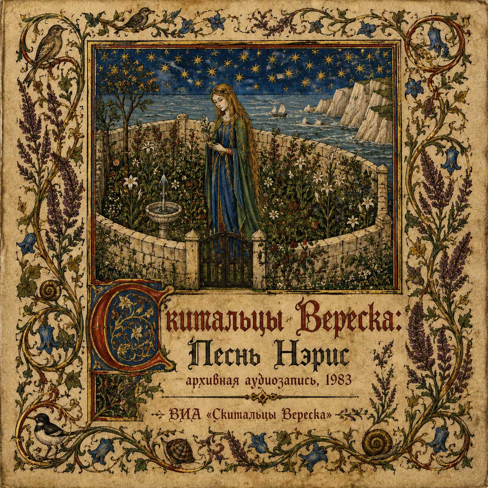

P · 08

Heather Wanderers
Soundtrack · Television Theatre
AVAILABLE / LISTEN
(Скитальцы Вереска) — the surviving audio archive of a fictional television play, presented as a reconstructed broadcast recording from 1983. The original production, filmed performance and visual materials have been lost, leaving only the soundtrack and fragments of a story preserved through song.
LISTEN TO HEATHER WANDERERS
We are currently working to make these recordings available on the remaining major streaming platforms.
TRACKLIST
9 TRACKS
- 01 Порог Миров
- 02 Сад у морской воды (Песнь Нэрис)
- 03 Послы Короля Олдэра
- 04 Воля Короны (Песнь Олдэра)
- 05 Шорох Вересковых Стен
- 06 Берег, где не властен род (Песнь Каэля)
- 07 Ночь у Белых Стен Веремора
- 08 Молчание Сада у Морской Воды
- 09 За Морским Пределом (Песнь Нэрис)
1983 · Television Theatre
9 Tracks